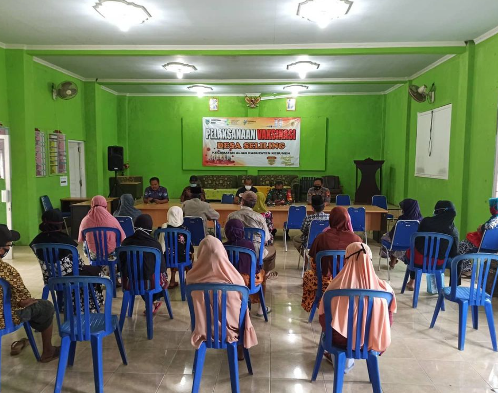
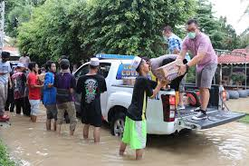
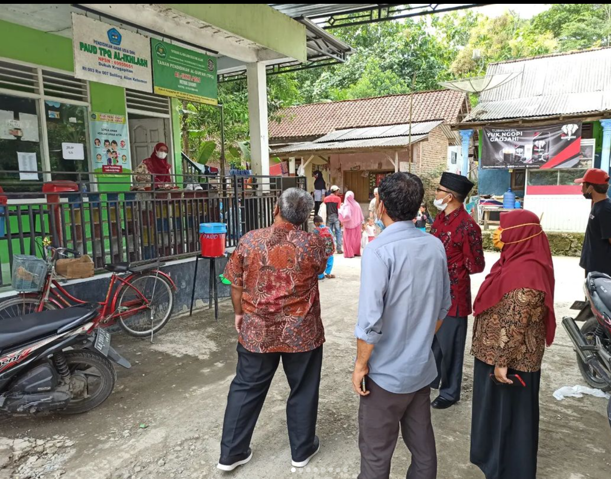

Visi dan Misi Desa Seliling
Visi : Mewujudkan Desa Seliling yang Maju, Sejahtera, dan Berbudaya, dengan masyarakat yang mandiri, berdaya saing, dan harmonis dalam keberagaman.
Misinya yakni untuk :
- Meningkatkan Kualitas Hidup Masyarakat: Berfokus pada peningkatan taraf hidup masyarakat melalui program-program pemberdayaan ekonomi, penyediaan fasilitas kesehatan, dan pembangunan infrastruktur yang memadai.
- Peningkatan Infrastruktur Desa: Meningkatkan kualitas dan kuantitas infrastruktur desa, seperti jalan, sarana transportasi, air bersih, dan sistem energi untuk mendukung pertumbuhan ekonomi dan kenyamanan hidup.
- Meningkatkan Pendidikan dan Kesehatan: Memastikan akses pendidikan yang berkualitas bagi semua lapisan masyarakat serta peningkatan pelayanan kesehatan yang merata di seluruh wilayah desa.
- Pelestarian Nilai Budaya dan Lingkungan: Melestarikan tradisi dan budaya lokal desa yang kaya serta menjaga keberlanjutan lingkungan hidup dengan mengembangkan program-program yang ramah lingkungan.
- Pemberdayaan Masyarakat dan Keterlibatan Aktif: Mendorong partisipasi aktif seluruh warga dalam pembangunan desa dan pemberdayaan masyarakat melalui pelatihan keterampilan, kegiatan sosial, dan kolaborasi antara pemerintah desa dan masyarakat.
Kegiatan Desa

Pelatihan keterampilan untuk masyarakat dalam meningkatkan ekonomi desa.

Program sanitasi untuk memastikan kebersihan dan kesehatan warga desa.

Penyuluhan lingkungan hidup untuk menjaga kelestarian alam.

Pembangunan infrastruktur jalan desa untuk mempermudah akses warga.